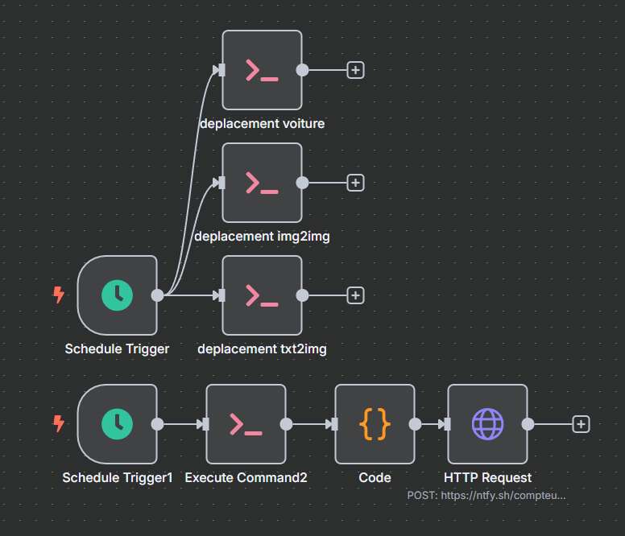

Crimson Lux
Pipeline d'automatisation IA pour la génération, le traitement et l'organisation d'images
Contexte
Crimson Lux est un projet d'automatisation complète du workflow de génération d'images par IA. L'objectif était de créer un système capable de générer, traiter et organiser automatiquement des milliers d'images selon des critères prédéfinis.
Objectifs
- Automatiser la génération d'images via API IA
- Implémenter un système de tri intelligent
- Organiser automatiquement les fichiers
- Optimiser le workflow de production
Compétences
- Python (automatisation & scripting)
- PowerShell (gestion de fichiers)
- APIs IA (génération d'images)
- Traitement d'images
- Architecture de pipeline
Résultats
- Pipeline entièrement automatisé
- Gain de temps significatif
- Organisation optimale des assets
- Système scalable et maintenable
Workflow d'Automatisation

Vision & Architecture
Pipeline industrialisé de bout en bout pour la génération, le traitement et la distribution de contenu IA
Architecture du Pipeline
- Collecte de prompts depuis Civitai
- Nettoyage et standardisation via IA
- Génération d'images avec Stable Diffusion
- Classification automatique (metadata, SFW/NSFW)
- Publication multi-plateformes via N8N
- Base de données centralisée (googledrive/sheets)
Ce que ce projet démontre
- Conception d'architecture système scalable
- Orchestration d'outils IA et automatisation
- Intégration multi-API (génération, publication, stockage)
- Gestion de workflows end-to-end
- Approche orientée amélioration continue
Pistes d'amélioration
- Système de scoring automatique des prompts
- Classification custom par style artistique
- Orchestrateur IA pour optimisation du pipeline
- Dashboard analytics en temps réel
- Génération de vidéos (reels automatisés)
Script de Tri Automatique
Script PowerShell pour l'organisation automatique des fichiers générés
Avant / Après
Avant
Résultat de prompt brut de civiai
Après
Résultat apres normalisation et ajouts des personnages automatique, structure optimisée